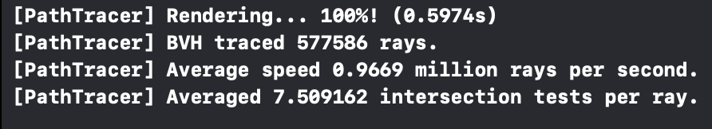
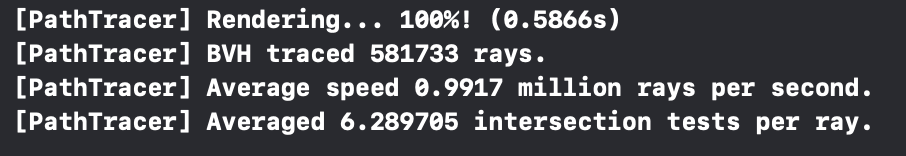

CS 184/284A: Computer Graphics and Imaging, Spring 2024
Homework 3: Pathtracer
Rodolfo Corona Rodriguez (3034203306)
Website: https://cal-cs184-student.github.io/hw-webpages-sp24-rcorona/hw3/index.html
Overview
TODO
Part 1: Ray Generation and Scene Intersection
TODO: We're missing some part of the pipeline explanation here! At least missing talk about camera --> world matrix and instantiation of rays?
Ray Generation: In the ray generation part of the pipeline, we are interested in estimating the irradiance of a pixel, i.e. its rendered value in the image, by taking samples of light that might come into the pixel from
different regions of the scene. Although a pixel might have a single RGB value in the display, in an image it is not a single point, but rather a continuous region in an image. Therefore, in order to get a proper estimate of its value,
we need to sample light coming into different points within that region in order to get an estimate of the irradiance.
A ray, or vector, originating from the origin of the camera and passing through a point in the pixel's region represents such an estimate. Because rays passing through different points in the region of the pixel may then intersect different
portions of the scene, the radiance they contribute may be different, and an average over the radiance of various random rays coming into the sensor from across the pixel's region will provide an estimate of that pixel's true irradiance.
Primitive Intersection: Given a ray from the camera passing into the scene, we next sample its radiance contribution to a pixel by taking the radiance coming into the rays direction from the object(s) it intsersects with in the scene.
Therefore, in order to determine which point(s) in the scene will contribute to a ray's radiance, we need to perform intersection tests to see which object(s) the ray will collide with.
In Part I we only consider intersection with triangle or sphere primitives in the scene.
For a sphere we can directly solve for the intersection point(s) of the ray analytically by solving a quadratic equation -- if the discriminant of the quadratic is non-negative, then the quadratic has real root(s) which correspond to the
intersection point(s) of the ray with the sphere.
We explain the case of the triangle intersection test below:
Triangle Intersection Test: To perform a triangle intersection test, I first check to see if the ray intersects with the plane that the triangle lies within (this is implemented as a helper function).
To determine the point of plane intersection, I first compute the normal vector N to the plane as the cross product between v1-->v2 and v1-->v3, i.e. the two vectors obtained by subtracting the first or second vertex respectively
from the third vertex in the triangle. Given the normal vector, we next solve for the parameter t along the ray which intersects with the plane using the equation t = dot(p1 - r.o, N) / dot(r.d, N).
Having determined the intersection point t, we next verify if it lies within the bounds of [r.min_t, r.max_t]. If it doesn't then it is not a valid intersection and we return.
If it does lie within the bounds, then we check to see if the plane intersection point lies within the triangle by performing a series of three line tests, one for each line defined by the three edges of the triangle.
Each line tests determines if the plane intersection point lies in the positive half-plane of a plane defined by a normal vector N to a given side (by taking the dot product between N and the vector from a vertex on the edge to the intersection point).
The normal vector is obtained by projecting one of the two other edges onto the tested edge (e.g. projecting v1-->v3 onto v1-->v2) and subtracting the projection from the projected edge (e.g. N = v1-->v3 - proj_v1-->v3(v1-->v2)).
If all three line tests return a dot product >= 0, then the point is determined to lie within the triangle. The isect is then filled in with the intersection parameter t, a pointer to the triangle, the bsdf function of the triangle, and its normal.
To compute the normal vector for the intersection point, we interpolate the normals from the triangle vertices using barycentric coordinates.
The barycentric coordiantes are obtainted by taking the proportion of the line test from an edge with the intersection point and the line test from that same edge and the triangle vertex that is not on that edge.
This line test works because a division of line tests works out to be equivalent to the proportion of the projections of each of the two vectors obtained by subtracting a triangle vertex on the line from the point being tested,
i.e. the proportion represents the percentage of how close the point is from the third vertex, and hence will always be in [0, 1].
Results: Below we can see four images that were rendered with the code from Part I: CBcoil.dae, CBgems.dae, bench.dae, and banana.dae.
 CBcoil.dae
CBcoil.dae
|
CBgems.dae
|
|
banana.dae
|
bench.dae
|
Part 2: Bounding Volume Hierarchy
BVH Construction Algorithm: For BVH construction, I first begin by creating a bounding box object to represent the node and iterating over all primitives from start to end.
Through the iteration, I expand the node's bounding box by each primitive's bounding box and I also generate a vector<Vector3D> where I push back all of the primitive centroids and
a vector<Primitive *> where I push back all of the primitive pointers.
Having created the bounding box for the current node, I allocate a new BVHNode object which I instantiate with the bounding box described above.
Now that we have a node object created with the appropriate bounding box, I proceed in one of two cases (described below): (1) If the number of primitives is <= max_leaf_size, then
I create a leaf node. (2) If the number of primitives is > max_leaf_size then I recurse and create two children nodes for the current node.
Case 1 (Leaf Node): In the case of a leaf node, I simply set node->start = start and node->>end = end to designate it as a leaf node.
Case 2 (Primitive Splitting): In the case of a split, I first compute the means of the centroids by summing over them in a loop and dividing the sum
by the size of the vector containing them. Having computed the means, I then compute the variances of the centroids as the sum over all centroids of (centroid[i] - means)^2
and dividing by the size of the vector containing the centroids.
Splitting Heuristic: Having computed the variances of the centroids, I then select the dimension (x, y, or z) with the highest variance as the dimension to split on,
with every primitive having a centroid value at that dimension less than or equal to the dimension's centroid mean going on the left branch, and otherwise on the right branch.
To split the primitives, I allocate two new Primitive* vectors (left_prims and right_prims) into which I push back the pertinent primitives.
I then set the current node's l and r variables to the node returned by recursing into construct_bvh(left_prims.begin(), left_prims.end(), max_leaf_size)
construct_bvh(right_prims.begn(), right_prims.end(), max_leaf_size).
Heuristic Explanation: The intuition behind this heuristic is that splitting at the mean location on the dimension with the highest centroid variance
will likely lead to the two branches with the largest extents in the sizes of their resulting bounding boxes. By maximizing the expected sizes of the two branches' bounding
box extents, we can maximimize the amount of space that is excluded when a branch is pruned during ray intersection search, which will hopefully lead to greater compute savings.
Results with Normal Shading: Below we visualize renderings for wall-e.dae (36.5MB), dragon.dae (8.7MB), CBlucy.dae (18.3MB), and blob.dae (29.1MB), which are all relatively larger files which would have taken much longer to render without BVH
acceleration:
 wall-e.dae
wall-e.dae
|
dragon.dae
|
 CBlucy.dae
CBlucy.dae
|
 blob.dae
blob.dae
|
Compare rendering times on a few scenes with moderately complex geometries with and without BVH acceleration. Present your results in a one-paragraph analysis.
Below we present screenshots of rendering times for beetle.dae (1.1 MB, 7558 primitives), peter.dae (2.7 MB, 40018 primitives), bunny.dae (2.2 MB, 33696 primitives), and CBbunny.dae (1.8 MB, 28588 primitives), all of which are files with moderately complex geometries
(single digit Megabytes in size).
On the left side we can see the runtime without bvh acceleration, and on the right we can see runtime with bvh acceleration.
All renders are generated with one ray per pixel and a resolution of 480x360.
|
peter.dae without bvh acceleration.
|

peter.dae with bvh acceleration.
|
 beetle.dae without bvh acceleration.
beetle.dae without bvh acceleration.
|
beetle.dae with bvh acceleration.
|
 bunny.dae without bvh acceleration.
bunny.dae without bvh acceleration.
|
bunny.dae with bvh acceleration.
|
 CBbunny.dae without bvh acceleration.
CBbunny.dae without bvh acceleration.
|

CBbunny.dae with bvh acceleration.
|
One Paragraph Analysis: Firstly, one can observe that the renders using BVH acceleration complete significantly faster than the renders without them.
To verify the runtime of the BVH algorithm, we can take peter.dae as an example. Rendering for the scene averages 5707 intersection tests per ray.
Because the BVH algorithm splits the scene into a binary tree of primitive subsets, we would expect the number of intersections to be roughly log_2(N) when using BVH acceleration.
Further, because the leaves consist of 4 primitives at most each, then our expected number of intersections will be log_2(5707 / 4) + 4 = 14.47. Interestingly, we can see that
the actual number of intersections is lower at 7.5 average intersections, which is 51.8% of the expected amount. Using the same formulation for the other renders, we get 53.4%, 44%, and 56%,
for beetle.dae, CBbunny.dae, and bunny.dae, respectively. This discrepancy, is likely due to the fact that the BVH tree will be pruned during each ray's traversal
by using the min_t and max_t parameters from the ray in question.
Next, we can observe that the runtime is faster by a factor of 346.2/ 0.597 = 579.8, 58.6 / 0.4903 = 119.5, 297.8 / 0.614 = 485, and 261.5 / 0.587 = 445.5 for peter.dae,
beetle.dae, bunny.dae, and CBbunny.dae, respectively. These factors appear to be in line with the relative sizes of the files, with the largest file (peter)
and the smallest file (beetle) having the largest and smallest proportional speedups. Therefore, since the speedup factor is not constant and increases with the size of the file, we can
conclude that the runtime of the BVH traversal algorithm is indeed sub-linear on the number of primitives.
Part 3: Direct Illumination
Walk through both implementations of the direct lighting function.
Overview: First, in est_radiance_global_illumination we will collect all of the summed irradiance into a Vector3D variable L_out.
L_out starts as a 0 vector, and we first check to see if the queried ray interesects with anything in the scene by calling the bvh intersect method.
If there is an intersection, then we first add the irradiance contribution from zero_bounce_radiance, which itself simply returns the emission from the bsdf contained by
the isect data structure.
Next we add the irradiance contribution comptued with one_bounce_radiance, which itself calls either estimate_direct_lighting_hemisphere
or estimate_direct_lighting_importance if direct_hemisphere_sample is true or false, respectively.
Diffuse BSDF: For the computation in the DiffuseBSDF::f, we can first consider the fact from lecture that the total irradiance arriving at a point
from a unifrom hemispherical light is E = L * PI. Because a diffuse surface scatters light equally in all directions, then the radiant intensity emmited in the
direction of any given solid angle will need to be divided by 2PI (because there are 2PI solid angles in a hemisphere). Further, the reflectance (or albedo) r of the diffuse material
dictates how much light is relfected/absorbed by each color channel in the range [0,1], and must therefore be used to weight the light being emmitted in a direction.
Therefore, this means that the radiant intensity emmitted in a given solid angle direction will be E(w) = r * L * PI / (2 * PI) = (r/PI) * L.
Because in the raytracing algorithm L will be represented by each sample estimate that we take, the r/PI term will be consumed by the brdf function
f = r / PI which will allow for the sample summation to be a correct approximation.
Direct Hemisphere Sample: In estimate_direct_lighting_hemisphere we define a Vector3D L_out which we use to represent the one bounce
irradiance estimate. First, we define a loop with num_samples iterations and in each iteration add sampled irradiance to L_out which we compute with a helper method
dl_hemisphere_sample. At the end of the loop, we return L_out / (double)num_samples as the averaged estimate.
The helper function dl_hemisphere_sample we take pointers to isect, hit_p, w_out, and o2w as input.
Next, we sample an incoming light direction w_in and pdf estimate pdf by calling Vector3D bsdf = isect->bsdf>sample_f(*w_out, &w_in, &pdf).
To compute the cosine of the incoming light ray angle, we take the dot product between w_in and Vector3D(0.0, 0.0, 1.0) because w_in is currently in the object
coordinate space.
Next, we instantiate the one-bounce ray, which is defined with origin hit_p and direction (o2w * w_in), since w_in needs to be rotated into world coordinates.
The ray's min_t is initialized to EPS_F in order to avoid collisions with the object of origin.
If the ray doesn't intersect with anything then we simply return Vector3D(0.0), representing zero contribution to irradiance.
If the ray does intersect with a primitive in the scene (determined calling the bvh intersect method), then we compute the light emission from that primitive by
calling Vector3D L = zero_bounce_radiance with the one-bounce ray and a new Intersection object. Next we return the irradiance contribution as
L_out = (bsdf * L * costheta) / pdf;.
Direct Lighting Importance:
The estimate_direct_lighting_importance method at a high level works similarly to the above, with samples being accumulated in a variable
Vector3D L_out.
First, we define a loop that iterates from i=0 to i = scene->lights.size() iterations.
In each iteration, we retrieve the light SceneLight* light = scene->lights[i] and define its number of samples n_l_samplesi> as 1 if it is a delta light
and otherwise to ns_area_light. We add this number to an int total_samples which keeps track of the total number of samples we've taken.
Next, we add the contribution from that sample using a helper method:
L_out += dl_get_lights_sample(light, &isect, n_l_samples, &hit_p, &w_out, &o2w, &w2o);.
At the end of the loop, we return L_out / (double)total_samples.
The helper function dl_get_lights_sample represents the irradiance contribution from a single light.
Within it, we first define a loop which will iterate for n_l_samples (defined above). For each sample, we first sample an incoming
direction from the light as well as its emission, distance from ray origin, and pdf as L = light->sample_L(*hit_p, &w_in, &light_dist, &pdf).
The cosine of the angle between the normal and incoming sample is computed as dot(isect->n, w_in) since sample_L returns an incoming direction
in the world coordinate space (which isect->n also lies in).
Next, we determine if the sampled direction lies within the hemisphere defined by the points surface normal, since we want to avoid additional unnecessary
computation in the case that the light lies behind the object (i.e. the direction lies in the opposite hemisphere).
To do this we check if (acos(costheta) <= PI / 2.0), since any angle at most PI/2 radians away from the surface normal will lie within the hemisphere.
If the light does indeed lie within the hemisphere, then we first compute a shadow ray to check if there is any primitive obstructing the ray from the light.
The ray will originate at hit_p with direction w_in. It's min_t parameter will be initialized to EPS_F to avoid hitting the object of origin and
the max_t will be set to abs(light_dist) - EPS_F, i.e. to only account for objects that lie in the ray's direction before the light and not consider anything
past the light.
Assuming that the shadow ray does not intersect with any primitives, then
the bsdf from the incoming direction is computed similarly as before with bsdf = isect->bsdf->f(*w_out, (*w2o) * w_in),
with the w_in direction being converted to object coordinate space prior to bsdf computation.
Lastly, the contribution from this light is added as L_out += (L * bsdf * costheta) / pdf;.
Show some images rendered with both implementations of the direct lighting function.
Below, we show images of CBspheres_lambertian.dae and CBbunny.dae both with hemisphere sampling and with light importance sampling.
For each image, we use 64 sample rays per pixel and 32 light/hemisphere samples. Both sets of images use direct lighting only (m=1).
|
CBspheres_lambertian.dae with hemisphere sampling.
|
CBspheres_lambertian.dae with direct light sampling.
|
|
CBbunny.dae with hemisphere sampling.
|
CBbunny.dae with direct light sampling.
|
Compare the results between uniform hemisphere sampling and lighting sampling in a one-paragraph analysis.
As a general trend, we can observe that the images using uniform hemisphere sampling are clearly much noisier and grainy than their counterparts
rendered with direct light sampling. Firstly, we can notice that a large majority of "incorrect" pixel estimates in the hemisphere sampling case
are completely dark pixels. These spots correspond to pixels for which none of the samples hit a light, something which due to the fact that
hemisphere sampling shoots light rays in sampled uniformly from the hemisphere defined by the normal
vector of the hit point in the first primitive intersection, which will generally result in a very low probability of landing on a light.
This observation is further corroborated by observing objects whose normals point in the general direction of the light, such as the top of the
bunny's back and head. In these spots the normal vectors likely point towards the light and hence a larger proportion of the sampling hemisphere
will result in a the light being hit, and so their samples have a proportionally lower amount of dark pixels than the rest of the scene.
Lastly, we can note that the proportion of dark pixel is highest around shadows, which makes sense because hemisphere samples in points that are
completely or partially obstructed from the light will have an even smaller probability of samples hitting a light than other regions of the scene.
In contrast, direct light sampling (under the selected settings of 64 rays per pixel and 32 light samples) does not suffer from this as much because
it uses importance sampling to get an estimate of the irradiance distribution at a point. The true irradiance at a point is achieved by integrating over
light contributions from all possible directions, however, there is a caveat that only directions with non-zero irradiance will actually contribute to this
estimate. Direct light sampling leverages this by taking samples only in directions that have a chance of having a non-zero contribution, while ignoring
any direction which we could assert will have no contribution. Therefore, by only sampling from potentially important regions in the distribution,
direct light sampling requires much fewer samples to converge than hemisphere sampling, as can be observed by the much more realistic renders yielded
from direct light sampling.
Focus on one particular scene with at least one area light and compare the noise levels in soft shadows when rendering with 1, 4, 16, and 64 light rays (the -l flag) and with 1 sample per pixel (the -s flag) using light sampling, not uniform hemisphere sampling.
Below we show images of CBspheres_lambertian.dae with 1, 4, 16, and 64 light rays during light sampling.
Every image is rendered with one sample per pixel.
 CBspheres_lambertian.dae with 1 light sample.
CBspheres_lambertian.dae with 1 light sample.
|
 CBspheres_lambertian.dae with 4 light samples.
CBspheres_lambertian.dae with 4 light samples.
|
 CBspheres_lambertian.dae with 16 light samples.
CBspheres_lambertian.dae with 16 light samples.
|
 CBspheres_lambertian.dae with 64 light samples.
CBspheres_lambertian.dae with 64 light samples.
|
Noise Level Comparison: Generally speaking, we can observe that the rendered images become increasingly less noisy as the number of
light samples increases. Take for example the top-left image using only a single sample. In that image, we can observe that shadows are very
obviously grainy, with shadow boundaries being particularly grainy. This grain is due to only having a single light sample per pixel, because instead
of having a gradation in the shadow, shadows are treated as a binary decision in this case, which means that each pixel will either be completely black
or have a single unmuted color value.
In contrast, we can observe the much less noisy variant using 64 samples (bottom-right). In this variant, each pixel gets 64 samples of light to average over,
so the sampled irradiance will now be an average of shadow rays (which contribute 0 irradiance) and color rays (which are unobstructed).
This averaging effect can be most clearly observed around shadow boundaries, where the shadow fades away much more gradually and uniformly as opposed to
the single sample case. This general trend can be observed in both of the intermediate images with 4 and 16 samples as well.
Part 4: Global Illumination
Walk through your implementation of the indirect lighting function
Overview: Within est_radiance_global_illumination we make a few changes. First, after the L_out = zero_bounce(...) contribution, we check to see if
max_ray_depth is > 0. If so, then we call Vector3D recurse_light = at_least_one_bounce_radiance(r, isect) to accumulate irradiance from at least one bounce.
If isAccumBounces is true, then we aggregate irradiance as L_out += recurse_light. If it is false, then we set L_out = recurse_light in order to only get
the deepest bounce of light.
at_least_one_bounce_radiance: First, we compute the contribution of the one bounce radiance as L_out = one_bounce_radiance(r, isect).
For the base case of the recursion, we now first check to see if r.depth + 1 == max_ray_depth (note that we add one because ray depth is initialized to 0).
If we have indeed reached maximum depth, then we simplly return L_out.
If we have not yet reached maximum depth, then we move on to computing the contribution of further bounces.
To do this, we first sample an incoming direction w_in for the direction of the next bounce along with its pdf by calling isect->sample_f(w_out, &w_in, &pdf).
Next, we use the sampled direction to instantiate a ray for simulating the next bounce as Ray recurse_r = Ray(hit_p, o2w * w_in, INF_D), with the max_t of the ray set
to infinity since we are interested in testing if it hits anything at all in the scene regardless of distance. Additionally, we set recurse_ray.min_t = EPS_F
(to avoid collisions with primitive of origin) and increment the depth of our search by setting its depth recurse_r.depth = r.depth + 1 (the depth of the input ray to the function + 1).
We now test to see if this ray hits any other primitive by instantiating a new Intersection object recurse_isect and calling bvh->intersect(recurse_r, &recurse_isect).
If the recursive ray does not intersect with a primitive in the scene, then we simply don't add anything more to L_out. If it does intersect with a primitive, then we first
compute the contribution from that bounce's recursion as L_i = at_least_one_bounce_radiance(recurse_r, recurse_isect), and then compute the cosine of the angle with the normal
as costheta = dot(w_in, Vector3D(0.0, 0.0, 1.0)) since w_in is in object coordinates.
We now compute the irradiance contribution from the recursion as L_i = L_i * bsdf * costheta / pdf and add it to the total irradiance as L_out = L_out + L_i.
Finally, after the recursion we conclude the method by returning L_out if isAccumBounces is true, or L_i if it is false (since we only want to keep the final
bounce irradiance in this case).
Russian Roulette: For Russian roulette we make a couple of simple modifications at_least_one_bounce_radiance.
First, after the check for maximum depth is passed (i.e. not yet at max depth), we define a double cpdf = 0.65 (representing 0.35 termination probability)
and use the coin_flip(cpdf) method call to decide if we will recurse or not. If it is true, then we proceed as described above, only that
we additionally divide L_i by cpdf.
Show some images rendered with global (direct and indirect) illumination. Use 1024 samples per pixel.
Below we show renders of CBspheres.dae and CBbunny.dae using either direct illumination or indirect illumination (in this case
including the contributions of direct illumination as well, i.e. the accumulation across all ray depths). Each render uses 16 light samples
and 1024 ray samples per pixel.
 CBspheres.dae with direct illumination.
CBspheres.dae with direct illumination.
|
 CBspheres.dae with indirect illumination.
CBspheres.dae with indirect illumination.
|
|
CBbunny.dae with direct illumination.
|
 CBbunny.dae with indirect illumination.
CBbunny.dae with indirect illumination.
|
Pick one scene and compare rendered views first with only direct illumination, then only indirect illumination. Use 1024 samples per pixel. (You will have to edit PathTracer::at_least_one_bounce_radiance(...) in your code to generate these views.)
Below we show renders of CBbunny.dae using either only direct illumination (i.e. light from m=0 and m=1), or using only indirect illumination
(i.e. light from m>= 2). Every render uses 1024 ray samples per pixel.
|
CBbunny.dae with only direct illumination.
|
CBbunny.dae with only indirect illumination.
|
Comparison: In terms of general trends, we can observe that for most regions of the scene, a large proportion of the intensity of illumination
is being contributed by the direct lighting, since it is a generally much brighter image than the indirect lighting image.
This makes sense because light contribution decreases in intensity exponentially over bounces so the 0th and 1st
bounce will have the strongest contributions. However, this is not true for every region in the scene, namely we can observe that regions that are obstructed
from the light source (e.g. such as much of the bunny's chest and viewer-facing lower side) can be completely dark. This is because direct lighting only accounts
for light that comes directly from the light, so anything that is obstructed from the light will have 0 direct light irradiance.
In contrast, we can clearly see that dark regions in the direct light image do have some irradiance in the indirect light image, which is due to light bouncing
from other objects in the scene and landing on them.
One other difference we can notice is that because the light is white, then in the direct light image the color of regions in the scene will be entirely
dependent on the color properties of the color primitive being hit by the light (i.e. only regions on the left wall are red, and only regions on the right wall
are blue, the bunny is grey). In contrast, because indirect illumination allows for light to bounce between objects, their colors can blend more into other objects,
such as can be observed in the indirect image on the bunny's chest and back,
which respectively are taking on more red and blue hues coming from the walls closest to them.
For CBbunny.dae, render the mth bounce of light with max_ray_depth set to 0, 1, 2, 3, 4, and 5 (the -m flag), and isAccumBounces=false. Explain in your writeup what you see for the 2nd and 3rd bounce of light, and how it contributes to the quality of the rendered image compared to rasterization. Use 1024 samples per pixel.
Below we show renders of CBbunny.dae under ray depths of 0, 1, 2, 3, 4, and 5 without bounce accumulation. Each image uses 1024 sample rays per pixel.
|
CBbunny.dae with with m=0
|
 CBbunny.dae with m=1
CBbunny.dae with m=1
|
 CBbunny.dae with with m=2
CBbunny.dae with with m=2
|
 CBbunny.dae with m=3
CBbunny.dae with m=3
|
|
CBbunny.dae with with m=4
|
 CBbunny.dae with m=5
CBbunny.dae with m=5
|
Comparison: By observing images with m=2 and m=3 (second row), we can notice a couple of contributions that indirect lighting makes which are not
directly possible to do with rasterization. Firstly, we can notice that in the two images we have a much more detailed scattering of light from objects onto
other objects. For example, we can see that the front and back of the bunny are red and blue, respectively, in both of the images due to light bouncing off
of the walls and contributing to their irradiance. Second, we can also notice that certain regions which are completely dark in the direct light image (with m=1)
have some irradiance in the indirect light images (such as the bunny's chest and viewer-facing side), which is due to light bouncing from other objects into
regions which are completely obstructed from the light source.
These two contributions from indirect light can be contrasted with rasterization, which can only use local information contained in and around a primitive
to determine the color of the surface. Rasterization does not take into account contributions to color stemming from light bouncing around the scene, and thus
cannot properly simulate reflection and diffusion of light across the scene, so color bleeding of red and blue as can be observed in these renders would
not be possible with rasterization. Additionally, completely dark regions in the direct light image would remain completely dark in images produced from
rasterization since razterization also cannot include contributions from light bouncing into light-obstructed regions of the scene.
For CBbunny.dae, compare rendered views with max_ray_depth set to 0, 1, 2, 3, 4, and 5(the -m flag). Use 1024 samples per pixel.
Below we show renders for CBbunny.dae with 1024 ray samples per pixel and maximum ray depths between 0 and 5 (with bounce accumulation on).
 CBbunny.dae with with m=0
CBbunny.dae with with m=0
|
CBbunny.dae with m=1
|
|
CBbunny.dae with with m=2
|
CBbunny.dae with m=3
|
 CBbunny.dae with with m=4
CBbunny.dae with with m=4
|
 CBbunny.dae with m=5
CBbunny.dae with m=5
|
Comparison: As noted earlier, we can see that for the direct light images (m=0 and m=1) we only get light that is either directly landing
on the camera from the light source or that has directly hit objects. Any region of the scene that is obstructed from the light source will be
completely dark in the direct lighting images.
At the second bounce and later, we can now start to see color blending from the walls contributing to the irradiance of other regions of the scene
through indirect lighting. Additionally, at m=2 and beyond we can also see that light-obstructed regions now have some irradiance since they are now
getting indirect lighting contributions from the rest of the scene.
One trend we can observe with bounce irradiance accumulation is that the images also become progressively brighter, even if only marginally in some cases.
This is because irradiance contribution from bounces is completely additive (i.e. not averaged), so the scene can only increase in brightness/illumination as the
number of bounces increases. Lastly, we can also observe that shadows become progressively softer/lighter as more light comes into the region from subsequent bounces.
For CBbunny.dae, output the Russian Roulette rendering with max_ray_depth set to 0, 1, 2, 3, 4, and 100(the -m flag). Use 1024 samples per pixel.
Below we show renders of CBbunny.dae with Russian roulette under different max ray depths. Here, we set the Russian roulette termination probability
to 0.35 in each bounce. Every render uses 1024 ray samples per pixel.
 CBbunny.dae with with m=0
CBbunny.dae with with m=0
|
 CBbunny.dae with m=1
CBbunny.dae with m=1
|
 CBbunny.dae with with m=2
CBbunny.dae with with m=2
|
CBbunny.dae with m=3
|
 CBbunny.dae with with m=4
CBbunny.dae with with m=4
|
 CBbunny.dae with m=100
CBbunny.dae with m=100
|
Comparison: As can be observed, qualitatively the images above are comparable in quality and appearance to the images rendered without using Russian roulette.
This is because Russian roulette is an unbiased estimator, and therefore we can keep a reliably estimate of irradiance while at the same time saving some cost in compute
by terminating certain paths early. Notice how the image rendered with m=100 is comparable in appearance to the m=5 image without Russian roulette. This is likely due to
most recursions terminating before they reach the 100th bounce as well as the the exponentially decaying nature of each bounce's contribution.
Pick one scene and compare rendered views with various sample-per-pixel rates, including at least 1, 2, 4, 8, 16, 64, and 1024. Use 4 light rays.
Below we show renders for CBbunny.dae using varying numbers of ray samples per pixel, each with 4 light rays and with m=5.
|
CBbunny.dae with with s=1
|
CBbunny.dae with s=2
|
|
CBbunny.dae with with s=4
|
 CBbunny.dae with s=8
CBbunny.dae with s=8
|
|
CBbunny.dae with with s=16
|
 CBbunny.dae with s=64
CBbunny.dae with s=64
|
|
CBbunny.dae with s=1024
|
Comparison: As a general trend, we can observe that images become increasingly noisy as we decrease the number of samples per pixel.
One major difference to notice between this experiment and the experiment varying the number of light samples is that the noise in these images
does not result in exclusively dark pixels, but rather more generally incorrect coloring of the pixels. For example, if we look at the image rendered with
s=1, we can notice that there is red and blue noise scattered throughout the scene. This is because we are accumulating bounces from only a single path, and
therefore can have pixels whose illuminance will be heavily biased by the objects the path traced through (such as the red and blue walls).
In other words, this noise is multi-colored because it is more dependent on objects in the path, and not as dependent on whether a given point on an object is
obstructed from the light or not (since we have indirect lighting with m=5 here).
As we get more samples, not only is the noise reduced, but (qualitatively) the variance across noisy pixels is reduced, with noise attaining a more grayish
color as opposed to running a larger color gamut. This is because even though pixels are still noisy due to low samples in the first few images, their estimates
themselves are now going to be averaged over multiple samples rather than just one, so even though the color might still be off from its true value for some
pixels, the range of values these incorrect values take on will be smaller.
Part 5: Adaptive Sampling
Explain adaptive sampling. Walk through your implementation of the adaptive sampling.
Explanation: At a high-level, adaptive sampling aims to take a minimal number of samples (in this case of pixel irradiance) while ensuring that the sampled estimate lies
within a desired confidence interval of the true value. Given a Z-value C for a confidence interval P (e.g. C = 1.96 for P = 95% confidence)
as well as a mean u and standard deviation s for a set with n samples, we can say that the given mean lies in the range
u +/- I with P confidence, where I = C * s/sqrt(n).
The final piece is that having computed I, we can now check after some number of samples if I <= u * maxTolerance, where maxTolerance is a value in [0,1].
This check in essence is defining a tolerance threshold for what the maximum tolerated percentage away from the (likely) value of convergence we are, e.g. if we set
maxTolerance = 0.05 then the check will be true when (with 95% confidence) the true value will be within 5% of the current sample mean's value.
Implementation Walkthrough: In our implementation we modify raytrace_pixel to break from its sampling loop (iterating over ns_aa samples) whenever the
confidence interval check described above is true.
Specifically, we first define a counter total_samples which we increment at every iteration so that we can keep track of the actual number of samples we take in case we exit
the loop early.
We define two floats, s1 and s2, which we will use to keep track of the sum of sampled values and sampled squared values, respectively
(incremented at the end of each loop iteration).
At each iteration of the loop, we first compute the current mean as mean = s1 / (double)total_samples, and the standard deviation as
std = sqrt((1.0 / (double)(total_samples - 1.0)) * (s2 - (s1 * s1) / (double)total_samples)).
Next we compute the bounds for the 95% confidence interval as I = 1.96 * (std / sqrt((double)total_samples)).
Next, if I <= maxTolerance * mean, then we have converged within tolerated bounds and we break out of the loop.
Lastly, we compute the current sample's illumination as sample_illum = sample_estimate.illum() and we increment s1 += sample_illum
and s2 += (sample_illum * sample_illum).
Pick two scenes and render them with at least 2048 samples per pixel. Show a good sampling rate image with clearly visible differences in sampling rate over various regions and pixels. Include both your sample rate image, which shows your how your adaptive sampling changes depending on which part of the image you are rendering, and your noise-free rendered result. Use 1 sample per light and at least 5 for max ray depth.
|
bench.dae rendering.
|
bench.dae rate image.
|
 CBspheres_lambertian.dae rendering.
CBspheres_lambertian.dae rendering.
|
CBspheres_lambertian.dae rate image.
|
 CBbunny.dae rendering.
CBbunny.dae rendering.
|
CBbunny.dae rate image.
|